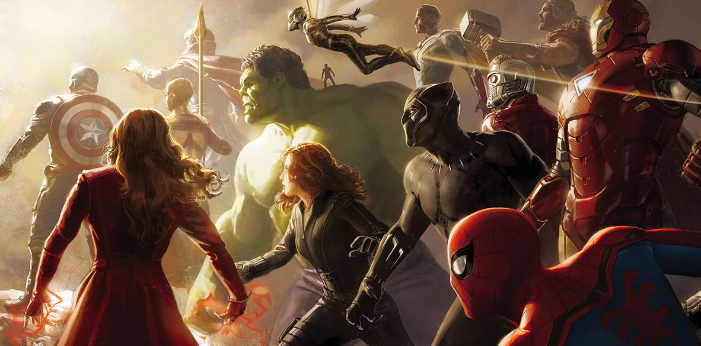
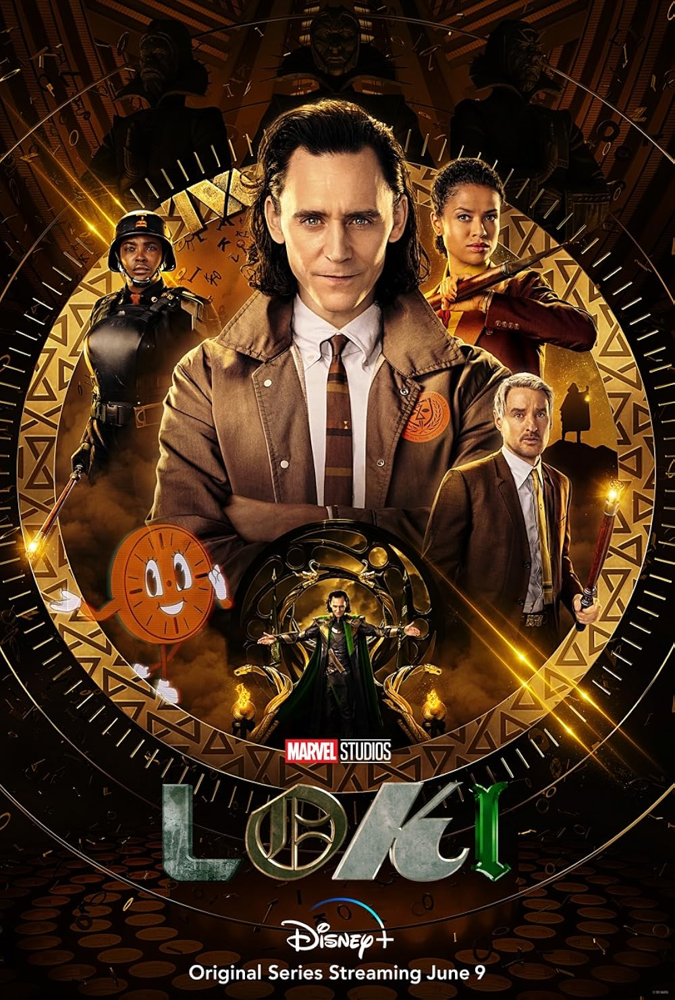
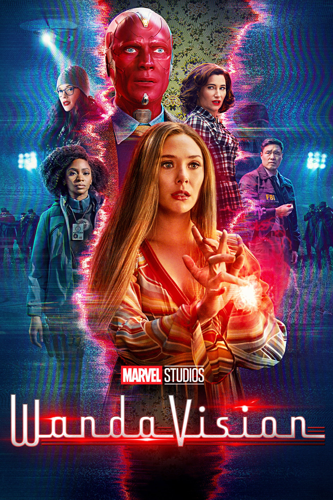
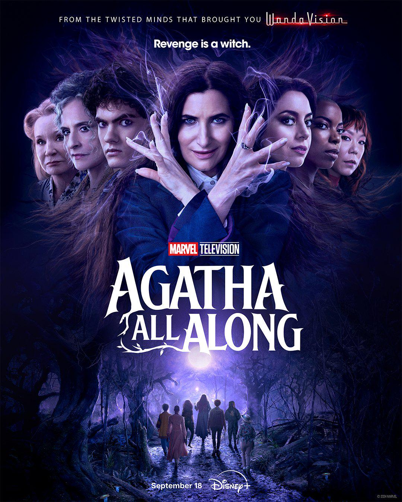

The Avengers

- Iron Man
- Capitan America
- Thor
- Black Widow
- Hulk
- Hawkeye
He is a genius billionaire inventor and CEO of Stark Industries who uses his high-tech armored suits to fight crime and protect the world, often leading the Avengers.
He is a patriotic Marvel superhero and leader of the Avengers, enhanced by the Super-Soldier Serum during WWII to fight HYDRA.
Norse god of thunder, lightning, storms, strength, and fertility, often depicted as a red-bearded, warrior protector of humanity and Asgard.
She is originally a Russian KGB assassin trained in the Red Room who defected to S.H.I.E.L.D. and later became an Avenger.
Dr. Bruce Banner, a brilliant scientist exposed to gamma radiation while attempting to replicate the Super Soldier Serum.
He is a master marksman, expert spy, and a founding Avenger.
Movies

All the released movies are devided in phases, 6 in total. The firts movie was released in 2008 and it was starring Robert Downey Jr. in the role of the main character, which carries the name of the movie, Iron Man. The latest movie was released in 2025, The Fantastic Four: First Steps.
Series



Marvel’s Cinematic Universe television series are superhero television shows produced by Marvel Television and Marvel Studios, based on characters appearing in Marvel Comics publications. The series are set in the shared universe of the UCM film franchise.